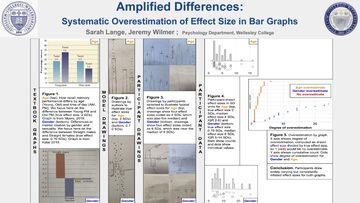

- Under review
Wilmer, J. B., Kerns, S. H., Widdup, L., & Nakayama, K. (2026). Graphs of averages provoke exaggerated and divergent interpretations; showing the data helps. Manuscript under review, Proceedings of the National Academy of Sciences.
- Preprint
Wang, Y., Kerns, S. H., Brady, T. F., & Wilmer, J. B. (2026). Average-Blindness and Ensemble-Acuity: When plotted raw data conveys averages better than plotted averages. PsyArXiv. https://doi.org/10.31234/osf.io/2xrw3_v2
- Preprint
Wilmer, J. B., Kerns, S. H., Widdup, L., & Nakayama, K. (2026). Graphs of averages exaggerate and sow disagreement. PsyArXiv. https://doi.org/10.31234/osf.io/4nyh5_v2
- Conference proceedings
Wilmer, J. B., & Kerns, S. H. (2025). The Uniformity Fallacy: A second common, severe misinterpretation of bar graphs of averages. Proceedings of the 47th Annual Meeting of the Cognitive Science Society (CogSci 2025). https://escholarship.org/uc/item/00s8z754
- Conference proceedings
Wang, Y., Kerns, S. H., Brady, T. F., & Wilmer, J. B. (2025). The Paradox of Certainty: When graphed ensembles convey averages better than graphed averages. Proceedings of the 47th Annual Meeting of the Cognitive Science Society (CogSci 2025). https://escholarship.org/uc/item/2kh4v05s
- Preprint
Wilmer, J. B., & Kerns, S. H. (2022). What’s really wrong with bar graphs of mean values: Variable and inaccurate communication of evidence on three key dimensions. OSF Preprints (manuscript in preparation). https://osf.io/preprints/osf/av5ey_v1
- Journal article
Kerns, S. H., & Wilmer, J. B. (2021). Two graphs walk into a bar: Readout-based measurement reveals the Bar-Tip Limit error, a common, categorical misinterpretation of mean bar graphs. Journal of Vision, 21(12), 17. https://doi.org/10.1167/jov.21.12.17
- Talk
Kerns, S., & Wilmer, J. (2026, May 20). Behind the bar: Stars, means, and the multiple faces of the Bar-Tip Limit error. Talk presented at the Applied Vision Science (AVS) Meeting, St. Pete Beach, FL. https://www.appliedvisionscience.org/talk-sessions/
- Talk
Wilmer, J., et al. (2026, May 20). Graph miscommunication: How averages distort understanding, and individual values clarify it. Talk presented at the Applied Vision Science (AVS) Meeting, St. Pete Beach, FL. https://www.appliedvisionscience.org/talk-sessions/
- Talk
Wilmer, J., Kerns, S., Widdup, L., & Nakayama, K. (2026, May 16). Graphs of averages exaggerate and sow disagreement. Talk 21.26 presented at the Vision Sciences Society (VSS) Annual Meeting, St. Pete Beach, FL. https://vss-2026-conclar.pages.dev/people/sarah-kerns
- Talk
Wilmer, J., Kerns, S., & Nakayama, K. (2026, May 15). Graphed averages sow disagreement: The average reading of an average is atypical. In J. Wilmer & M. Herzog (Chairs), The quest for “the average person” in vision science: Promise and pitfalls [Symposium], Vision Sciences Society (VSS) Annual Meeting, St. Pete Beach, FL. https://www.visionsciences.org/symposia/
- Poster
Wilmer, J. B., Awrang Zeb, T. B., Kerns, S. H., & Nakayama, K. (2025). Visualized averages produce polarized sentiment. Poster, VSS 2025, St. Pete Beach, FL. Journal of Vision, 25(9), 2468. https://doi.org/10.1167/jov.25.9.2468
- Poster
Wang, Y., Brady, T. F., Kerns, S. H., & Wilmer, J. B. (2025). The Paradox of Certainty: Graphed ensembles convey averages better than graphed averages. Poster, VSS 2025, St. Pete Beach, FL. Journal of Vision, 25(9), 2563. https://doi.org/10.1167/jov.25.9.2563
- Demo
Wilmer, J., & Kerns, S. (2025, May 19). Caricature effect in data visualization. Demo 16, VSS 21st Annual Demo Night, St. Pete Beach, FL. https://www.visionsciences.org/2025-demo-night-2/
- Panel
Wilmer, J. B., Kerns, S. H., & Nakayama, K. (2025, May 18). Graphs of averages exaggerate and sow disagreement. Panel presentation, Hands-on Data Visualization Brown Bag, VSS 2025 satellite event, St. Pete Beach, FL (panel speaker and co-organizer). https://www.visionsciences.org/2025-data-visualization-satellite/
- Poster
Wilmer, J., & Kerns, S. (2022). How bar graphs deceive: Readout-based measurement reveals three fallacies. Poster, VSS 2022. Journal of Vision, 22(14), 3968. https://doi.org/10.1167/jov.22.14.3968
- Poster
Lee, J. Y., Kerns, S., & Wilmer, J. (2022). Bar graphs of mean values produce inflated and variable estimates of effect size. Poster, VSS 2022. Journal of Vision, 22(14), 4432. https://doi.org/10.1167/jov.22.14.4432
- Demo
Wilmer, J., & Kerns, S. H. (2022). The caricature effect in graphical communication. Demo, VSS 2022 Demo Night. https://www.visionsciences.org/2022-demo-night/
- Organized event
Wilmer, J., & Kerns, S. (Co-organizers). (2022, May 14). Data Visualization Micro-Talk Event. VSS 2022 satellite event, St. Pete Beach, FL. https://www.visionsciences.org/2022-vss-data-visualization-satellite/
- Poster
Kerns, S., & Wilmer, J. (2021). The Bar-Tip Limit error: A common, qualitative misinterpretation of bar graphs of means revealed by the DDoG method. Poster, VSS 2021. Journal of Vision, 21(9), 2602. https://doi.org/10.1167/jov.21.9.2602
- Poster
Kerns, S., Kim, H., Grinspoon, E., Germine, L., & Wilmer, J. (2020). Toward a science of effect size perception: The case of introductory psychology textbooks. Poster, VSS 2020. Journal of Vision, 20(11), 1185. https://doi.org/10.1167/jov.20.11.1185

- Poster
Kerns, S. H., & Wilmer, J. B. (2020, June 17). Amplified differences: Systematic overestimation of effect size in bar graphs. Poster 64, Eastern Psychological Association (EPA) 91st Annual Meeting. Poster (PDF)
